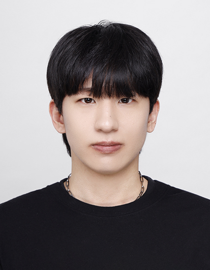

NEXT-GEN SOFTWARE ENGINEER
박수용;
단순히 작동하는 코드를 넘어, 효율적이고 구조적인 설계를 고민합니다.
현재 C#과 Linux 시스템을 활용한 최적화에 몰입하고 있습니다.
CORE TECH STACK
FEATURED PROJECTS
• Semicolon Team Introduction Page
Git Flow 전략을 활용한 협업 실습 및 개인 포트폴리오 사이트 구축
• C-Language Calculator Project
GitHub을 통한 기능별 브랜치 관리 및 사칙연산 로직 구현